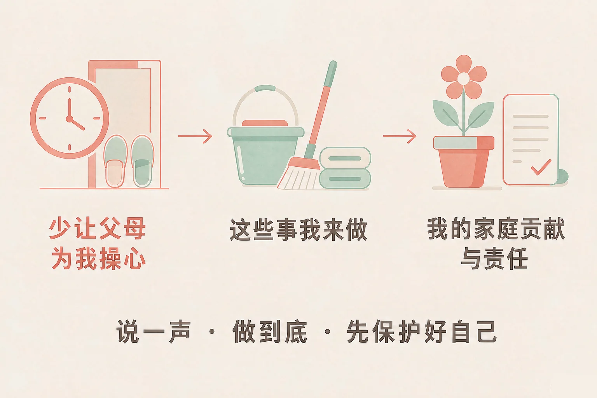
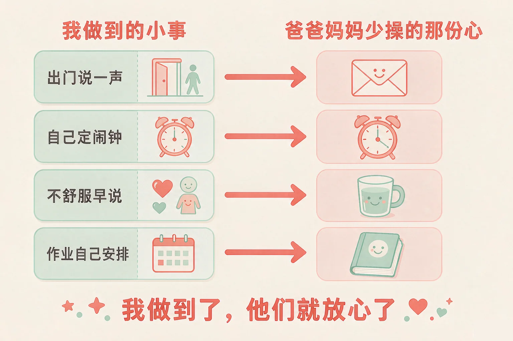
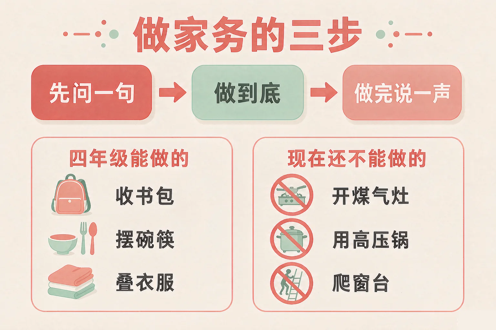

Gallery
v1.0.0 · skill v7.22.0
小学四年级 · 中华优秀传统文化
爸爸妈妈每天在担心什么？其中哪一份心，是我能替他们分掉的？

选一个你真正想知道的问题，后面的活动都会围着它转。
选择或输入后，这节课会围绕你的问题展开。
先凭直觉选一个，选完立刻看到解释——错了也没关系，正好知道要重点听哪里。
1. 下面哪一件事，能让爸爸妈妈少操一份心？
一句话说清去哪儿、和谁、几点回，爸爸妈妈就不用在家门口一遍一遍看表。错因提醒：常见错误是误认为「不说他们就不会担心」——不知道你在哪儿，才是他们最担心的时候。
2. 你想帮妈妈洗碗，下面哪种开始的方式更好？
问清楚再做，才不会洗完还得有人重洗一遍。错因提醒：有的同学误认为「做家务做得越多越好」——做得不合适，大人反而要多花时间收拾，那就不是帮忙了。
3. 你一个人在家，门铃响了，外面的人说是来修水管的，下面哪种做法更合适？
不开门、先告诉大人，是最稳妥的做法；真有人来修，爸爸妈妈比你会安排。错因提醒：容易把「礼貌」和「开门」搞混——隔着门不出声也算不得没礼貌，说「家里没人」反而让人知道你确实一个人在家。
为什么要学这一课？
我们每天觉得爸爸妈妈管得很多（And）；可是很少想过，他们那些提醒背后是一份担心，而这份担心有一部分是可以替他们分掉的（But）；所以这节课先算一算：哪些事我确实做不到，哪些事我今天就能做到（Therefore）。
爸爸妈妈担心的都是很具体的事：路上安不安全、一个人在家怕不怕、睡够没睡够、书包带齐了没有。
我做不到的
上班、做饭、挣钱、照顾生病的家人。这些现在确实还做不到，不必勉强自己。
我今天就能做到的
出门说一声去哪儿、和谁、几点回；自己定闹钟起床；身体不舒服早说；作业自己安排好。

还要记住几条安全做法
一个人在家，不认识的人按门铃就不开门，先给爸爸妈妈打电话 · 湿手不碰插座 · 闻到煤气味先开窗、再离开厨房，不开灯不打火，然后告诉大人 · 走人行道，过马路看清楚再走。
有的同学误认为「让父母放心，就要什么都自己扛着」。可身体不舒服还硬撑、遇到害怕的事一声不吭，只会让大人事后更担心。遇到危险，第一件事是先保护好自己，再去找大人。
🔍 深层理解 换个角度再看一遍这件事，看看能不能说出背后的原理。
看见它：同一句「早点回来」，可以听成「又在管我」，也可以听成「她在家里等着我」。听成哪一种，你接下来做的事会很不一样。
解释它：为什么说一句「我去哪儿、几点回」这么有用？因为担心大多来自不知道；知道了，那份担心自然就小了一半。
迁移它：这套办法在家里和在学校都管用：和同学约着出去，也说清去哪儿、和谁、几点回，家里和老师都会放心。
先点一件在家里常常遇到的事，再从三个做法里选一个。选得好会告诉你为什么，选得不太合适也会告诉你还可以试试什么，还会告诉你家里人当时可能会怎么想。
先点一件家里可能遇到的事。
做家务，不是做得越多越算帮忙，而是怎么做才真的帮上忙。真的帮上忙，要走三步。

有些事，现在做了反而更让人担心
自己开煤气灶 · 自己用高压锅 · 爬到窗台上擦外面的玻璃 · 一个人搬很重的柜子。这些不是不让你帮忙，是现在还不能做——想做的时候，先问一句。
我的家庭贡献，不只是干活
爸爸妈妈下班回来，你先说一句「我作业写完了」，他们的脚步就会轻一点；家里商量周末去哪儿，你说说自己的想法，也是你在这个家里的一份。
有的同学误认为「帮上忙，就是我替大人把所有事都做完」。其实让大人少操一份心，也是一种分担——而且常常是你现在就能做到的那一种。
🔍 深层理解 换个角度再看一遍这件事，看看能不能说出背后的原理。
看见它：「我问了要不要帮忙」和「我做完告诉他一声」，中间差着一步「做到底」。差这一步，大人还是得自己去看一遍。
比较它：同样是想熬粥：一种是直接去开煤气，一种是把米淘好请爸爸按键。两种都是心意，可只有后面这一种，妈妈躺着才睡得踏实。
迁移它：这套办法在学校也管用：老师让小组做一件事，先问清要做什么、做到底、做完说一声，比闷头做完再说更让人放心。
你现在是家里的帮忙小队长。先挑一件你想帮忙做的家务，再从三种做法里选一种，看看做完以后家里是什么样子。
先在上面点一件家务。
情境：那天早上，妈妈起来脸色不好，量了体温，发烧了。爸爸已经上班走了，弟弟下午才放学。请你看看小禾这一天是怎么做的。
第五步：做不了的别硬做
小禾想给妈妈熬一锅粥，走到厨房门口停住了——开煤气这件事她还没做过。她先问了一句，妈妈说不行，她就改成把米淘好放进电饭煲，请爸爸回来按键。这一天她没做出什么大事，可妈妈下午睡了一个安稳的觉。
有的同学误认为「为父母分担，就是把家务全包下来」。可小禾如果硬去开煤气，妈妈躺着也睡不踏实——分清哪些能做、哪些现在还不能做，本身就是分担的一部分。
先凭直觉选一个，选完立刻看到解释——错了也没关系，正好知道要重点听哪里。
1. 关于帮爸爸妈妈做家务，下面哪句话说得对？
问清楚、做完整、说一声，大人省下的不只是力气，还有那一份「还得再去看看」的心。错因提醒：常见错误是误认为「心意到了就算帮上忙」——做到一半走开，大人反而要多花时间收拾，那就不是帮忙了。
2. 你想周末和同学去打球，可家里那天安排了去外婆家，下面哪种做法更好？
说清楚再商量，两件事往往都能安排开，也不会让外婆白等一场。错因提醒：有的同学误认为「不说就是不添麻烦」——憋着不说，家里还是会觉得你不对劲，只是不知道问题在哪儿。
3. 你一个人在家闻到一股煤气味，下面哪种做法更合适？
开窗、离开、打电话，这三步都做对了；这种时候，先保护好自己最要紧。错因提醒：容易把「找原因」摆在「保护自己」前面——在漏气的屋子里开灯，可能会引燃气体，非常危险。
先点一条做法，再点它应该进的筐：真帮上忙的放一边，要调整的放另一边。
先在上面点一条做法。
分完之后，想一想：
「真帮上忙的」这一边里，你最想先做哪一条？写在下面，再说一说为什么选它。
先凭直觉选一个，选完立刻看到解释——错了也没关系，正好知道要重点听哪里。
1. 你一个人在家写作业，门外有人敲门说是抄表的，下面哪种做法更好？
不开门、先告诉大人，是最稳妥的做法；真有人来抄表，爸爸妈妈比你会安排。错因提醒：常见错误是误认为「隔着门不出声很没礼貌」——说「家里没人」反而让人知道你确实一个人在家，不出声或者只说一句「你晚点来」更安全。
2. 妈妈让你先把作业写完再下楼玩，可你已经和同学约好了时间，下面哪种做法更好？
把时间说出来，事情就有得商量；妈妈常常不是不让你玩，是怕你作业拖到很晚。错因提醒：容易把「留在家里」当成「听话」——磨到很晚才写完，作业没写好、觉也睡晚了，两边都亏。
3. 爸爸下班回来，看起来有点累，下面哪种做法更好？
把已经做好的事说一声，是让大人安心，也是最省力的分担。错因提醒：有的同学误认为「不说就等于不添麻烦」——一句「我做完了」其实很轻，却能让爸爸的脚步轻一点。
一句口诀：说一声、做到底、先保护好自己，能做的小事先做起来。
给别人讲一遍：请用「说一声、我来做、我们一起想办法」这三个说法，说清楚你家里的一件事。
再动一动手：写一写你今天回家想先做的那一件小事，写清做什么、什么时候做、做完告诉谁。
三层练习，做完第一、二层就算通关；第三层留给愿意继续探索的同学。
⭐ 基础巩固（必做）
⭐⭐ 能力应用（必做）
⭐⭐⭐ 迁移挑战（选做）
左边是学它之前要先会的，右边是学会之后可以继续探索的，下面是同一领域的伙伴知识。
图谱正在加载：首次进入需下载知识索引（约 1–3 秒），加载完成后本行会自动消失。